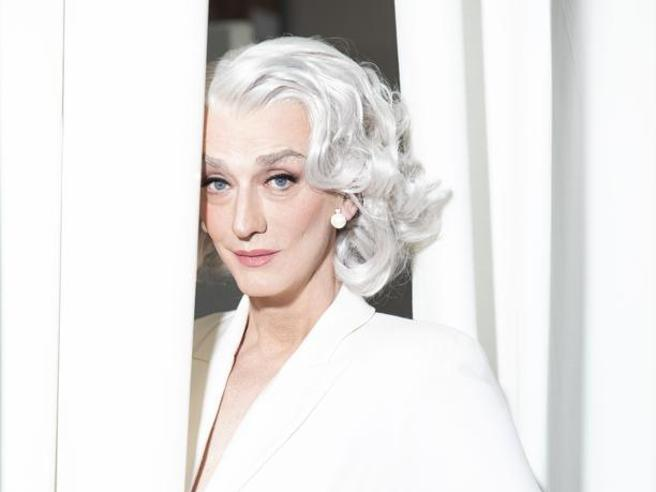
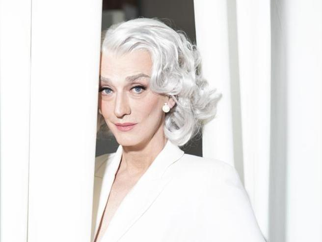
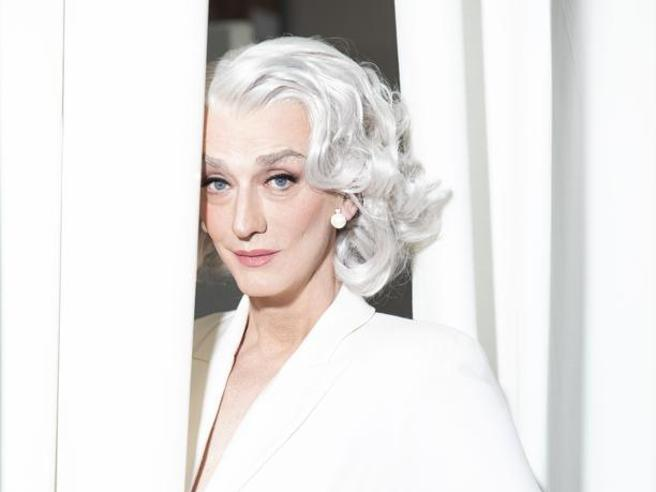

-La nostra foto che ritrae Rrose Selavy è stata scelta per un ready made che è stato realizzato applicando su un flacone, del profumo francese Rigaud, l'etichetta realizzata da Man Ray con l'immagine di Rrose, e sostituendo la didascalia originaria con la scritta "Belle Heleine. Eau de voilette", e il monogramma stampato al contrario RS.
Rrose Selavy nasce dalla mente di Duchamp e dalla macchina fotografica di Man Ray. Nel 1920 Duchamp decide di cambiare identità, di dare vita ad un personaggio fittizzio, attraverso un cambio di sesso, creando il suo alter-ego: Rrose Selavy.
Questa donna prende vita attraverso le fotografie di Man Ray, rendendo così reale un personaggio irreale.
Marcel Duchamp costruisce intorno a Rrose Selavy un intero immaginario, trasferendo su di essa la sua attività artistica; tanto che Rrose ha dei biglietti da visita che indicano nome e professione, e firma, con questo nome, la produzione artistico-letteraria di giochi di parole.
In questo processo creativo la fotografia perde il suo scopo originario, cioè fissare l'identità di chi è ritratto, per annullare la memoria di se facendo nascere così la rrose selavy. Duchamp non crea solo l'identità di Rrose ma fa di lei il tipico ritratto della donna anni '20.
Man Ray per i ritratti di Rrose si ispira alle pubblività dell'epoca utilizzando abiti all'ultima moda, gioielli, trucco e pose seducenti.
Drusilla Foer è un personagio interpretato da Gianluca Gori e non è altro che il suo alter ego. Il personaggio di Drusilla ha una storia curata nei minimi dettagli che va a differire con la reale storia di Gianluca.
Gianluca era abituato a frequentare i salottini dei nobili fiorentini. Qui si divertiva ad intrattenere i commensali con la parodia di questa donna nobile, di mezza età con un modo chic. Da qui parte il suo grande successo.
La Foer viene definita la signora che fa costume dentro un costume. Tutto è fittizzio ma nonostante ciò sta divenendo tutt'oggi un'icona dello spettacolo italiano.
Rappresenta la donna elegante e raffinata, divenendo anche un'icona di moda. Si deve mettere in evidenza il fatto che ha vinto il nastro d'argento: cameo dell'anno 2022, grazie al film commedia 'sempre più bello'.
